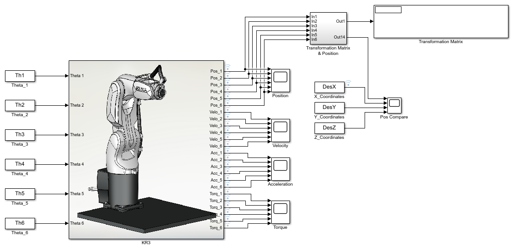

Contents
DH Parameter of Manipulator
DH-Parameter is the configuration that is needed to generate the robot simulation. Using those configurations a robot can be built into a software to generate for simulation. Here Robotic Toolbox of Peter Corke's is used for generating manipulators into MATLAB. As seen below, it can be seen that each joint of a manipulator is defined into an array, and then that array is called into the SerialLink which generates the manipulator based on the DH-Parameter.
clear all; clc; close all; L (1) = Revolute('d',0.345 ,'a',0.02 ,'alpha',pi/2 ,'qlim',[-2.9671 2.9671], 'offset',0); L (2) = Revolute('d',0 ,'a',0.260 ,'alpha',0 ,'qlim',[-0.8727 2.9671], 'offset',0); L (3) = Revolute('d',0 ,'a',0.02 ,'alpha',pi/2 ,'qlim',[-2.7053 1.9198], 'offset',pi/2); L (4) = Revolute('d',0.260 ,'a',0 ,'alpha',(-pi/2) ,'qlim',[-3.0543 3.0543], 'offset',(-80*pi)/180); L (5) = Revolute('d',0 ,'a',0 ,'alpha',(pi/2) ,'qlim',[-2.0945 2.0945], 'offset',0); L (6) = Revolute('d',0.075 ,'a',0 ,'alpha',0 ,'qlim',[-6.1087 6.1087], 'offset',0); qz = [0 0 0 0 0 0]; KR3 = SerialLink(L,'name','KUKA KR3 Agilus'); KR3.manufacturer = 'JD & M'; KR3.ikineType = 'KR3';
Input
In this section, The task space points which are generated using other software like SolidWorks are being converted using the ConversionC function into an array. Time limit is also given to complete the given task.
% Points = conversionP('Trianguler_Piramid.csv'); Points = conversionC('Circle.csv'); N = length(Points(1,:)); timeDuration = 10;
Quaternion Calculation
tic
for k = 1:N
Quaternion Conversion
As the Dual Quaternion has its own condition which needs to be satisfied before further use of it. All the Points that are generated above are being converted into the Quaternion form and also it's being checked for the Dual Quaternion Condition.
Des = Quat_Conversion(Points(:,k));
Inverse Kinematics
In this section, Inverse kinematics is solved for the above-generated trajectory. Due to the absence of an analytical solution of KR3, the numerical iterative solution is used to calculate the inverse kinematics of the given trajectory using the fsolve. Although the analytical solution is derived partially and it's used as the initial value need into the fsolve. Initial Values are given for the fsolve. it can be changed as per desired although it can affect the solution for a few points in the beginning.
if(k == 1) Ini = [pi/6 pi/6 pi/6 pi/6 pi/6 pi/6]; else Ini = OPx(:,k-1); end Func = 1e-6; Step = 1e-6; options = optimoptions('fsolve','Display','off','Algorithm','levenberg-marquardt','FunValCheck','on','FunctionTolerance',Func,'StepTolerance',Step); tempOPx(:,k) = fsolve(@ikine_Quat,Ini,options,Des);
Checking Joint Limitation
Here to avoid collision of the joints into the simulation, a filter is used for joint angles. which converts the angle from one quadrant to another quadrant.
OPx(:,k) = trimTheta(tempOPx(:,k),KR3);
Warning: Q-limit Reached at Theta One
Validating with Forward Kinematics
Forward kinematics is calculated to verify the inverse kinematics.
[Co_Ordinates(:,:,k),Angles(:,:,k)] = fkineQ(OPx(:,k));
Checking Singularities
To detect any type of singularity, a conditional filter is used in which the Jacobian Matrix is calculated and its determinant is the which is used to separate the singular pose.
j(:,:,k) = jacobianQ(OPx(:,k));
psinv = pinv(j(:,:,k),1e-4);
psuedoDet(:,:,k) = j(:,:,k)'*j(:,:,k);
Determinant(:,:,k) = det(psuedoDet(:,:,k));
% if ((Determinant(k) <= 1e-4) && (Determinant(k) >= (-(1e-4))))
% fprintf('\n Jacobian of the pose(%d).\n',k);
% fprintf('\n Determinant of the pose(%d): %f\n',k,Determinant(:,:,k));
% warning('Determinant of the pose is zero.It shows the singularity.')
% end
end
toc
Elapsed time is 18.038074 seconds.
Simulink Data Generation
Data set is being generated in this section which is used as an input for the Simulink Model. All the data has been calculated above and has been filtered as per the need.
th1 = reshape(OPx(1,:),[],1); th2 = reshape(OPx(2,:),[],1); th3 = reshape(OPx(3,:),[],1); th4 = reshape(OPx(4,:),[],1); th5 = reshape(OPx(5,:),[],1); th6 = reshape(OPx(6,:),[],1); Time = linspace(0,timeDuration,length(th1))'; TimeStamp = Time(2); Th1 = [Time th1]; Th2 = [Time th2]; Th3 = [Time th3]; Th4 = [Time th4]; Th5 = [Time th5]; Th6 = [Time th6]; DesX = [Time Points(1,:)']; DesY = [Time Points(2,:)']; DesZ = [Time Points(3,:)']; theta = [th1 th2 th3 th4 th5 th6]; wayPoints = [Points(1,:); Points(2,:); Points(3,:)]';
Simulink Model
Simulink allows us to replicate the outside environment in which manipulators will be used. The Simulink model is can be generated by either importing the assembly of the manipulators or generating the mechanical circuit manually. The below command will open the Simulink model required for the simulation of an above-generated manipulator. After it opens, simply press cntrl+D to update and compile the Simulink model. After it gets compiled, a window will open containing the manipulator. Then simply press the cntrl+T or play button in the window to run the simulation.
open_system('Simscape_Model_ver_3.slx');
